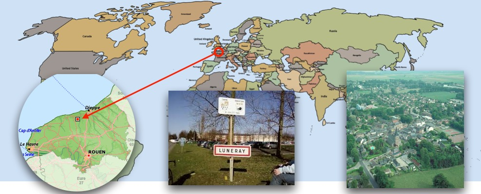

Luneray's flu
This tutorial has for goal to introduce how to build a model with GAMA and to use GIS data and graphs. In particular, this tutorial shows how to write a simple GAMA model (the structure of a model, the notion of species...) load gis data, to agentify them and to use a network of polylines to constraint the movement of agents. All the files related to this tutorial (shapefiles and models) are available here.
The importation of models is described here
Model Overview
The model built in this tutorial concerns the spreading of a flu in the city of Luneray (Normandie, France).

Two layers of GIS data are used: a road layer (polylines) and a building layer (polygons). In this model, people agents are moving from building to building using the road network. Each infected people can infect the neighbor people.
Some data collected concerning Luneray and the disease:
- Number of inhabitants: 2147 (source : wikipedia)
- Mean speed of the inhabitants (while moving on the road) : 2-5 km/h
- The disease - non lethal - is spreading (by air) from people to people
- Time to cure the disease: more than 100 days
- Infection distance: 10 meters
- Infection probability (when two people are at infection distance) : 0.05/ 5 minutes
From the data collected, we made some modeling choice:
- Simulation step: 5 minutes
- People are moving on the roads from building to building
- People use the shortest path to move between buildings
- All people move at constant speed
- Each time, people arrived at a building they are staying a certain time
- Infected people are never cured

Step List
This tutorial is composed of 5 steps corresponding to 5 models. For each step we present its purpose, an explicit formulation and the corresponding GAML code.